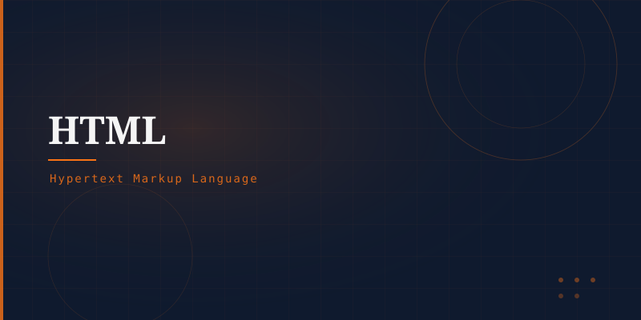

What is HTML?
Hypertext Markup Language (HTML) is the standard language for creating web pages. It describes the structure of web content using a system of elements represented by tags. HTML tells the browser how to display headings, paragraphs, links, images, tables, forms, and more.
HTML was created by Tim Berners-Lee in 1991 alongside the World Wide Web. The current standard is HTML5, maintained by the W3C and WHATWG.
Basic Structure
<!DOCTYPE html> → <html> → <head> (metadata, title, CSS links) → <body> (visible content: headings, paragraphs, images, links) → </html>
Key HTML Concepts
Tags like <h1>, <p>, <a>, <img> define content types.
Provide extra info: href (link destination), src (image source), alt (image description).
The <a> tag creates links between pages — the "hyper" in HTML.
Elements like <header>, <main>, <article> convey meaning to browsers and screen readers.
HTML5 Additions
HTML5 (2014) introduced powerful new features: native <video> and <audio> elements, the <canvas> element for drawing, geolocation API, local storage, web workers, and semantic sectioning elements — reducing dependence on plugins like Flash and enabling rich web applications.